The Fool
YU
Calm and composed leader.
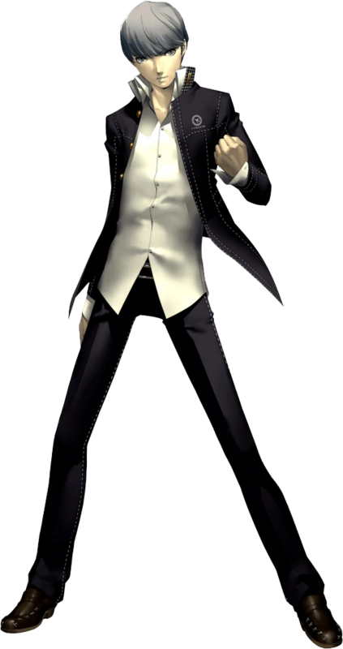
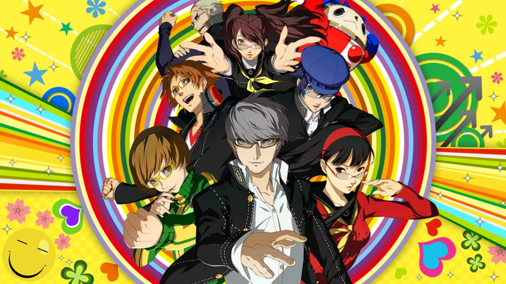
Set in the quiet, rural town of Inaba, Persona 4 Golden begins when a series of mysterious murders occurs alongside the appearance of a strange fog. The urban legend of the "Midnight Channel" leads a group of high school students to discover a world inside the television.
As they navigate this dangerous dimension, they awaken their Personas—the physical manifestation of their inner selves. The game perfectly balances a deep supernatural investigation with the heartwarming daily life of a student, emphasizing that the greatest power comes from the bonds of friendship.
Calm and composed leader.

Loyal and energetic friend.
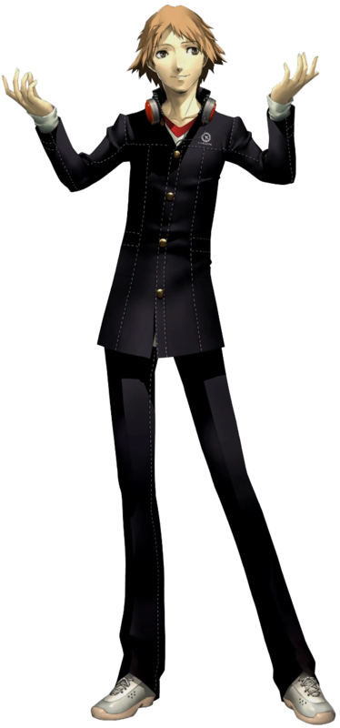
Energetic fighter of justice.
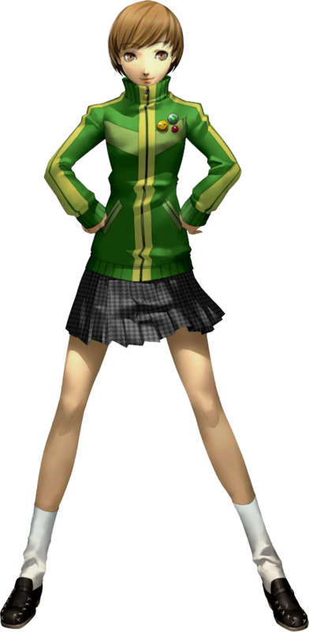
Gentle but strong personality.
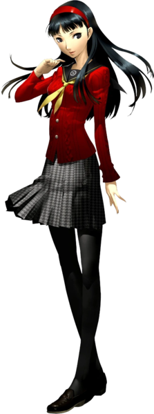
Tough exterior, soft heart.
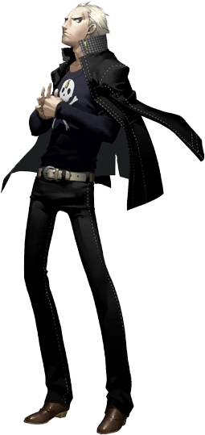
Cheerful idol and supporter.
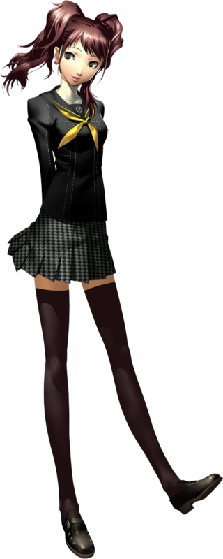
Mysterious guide of the TV world.
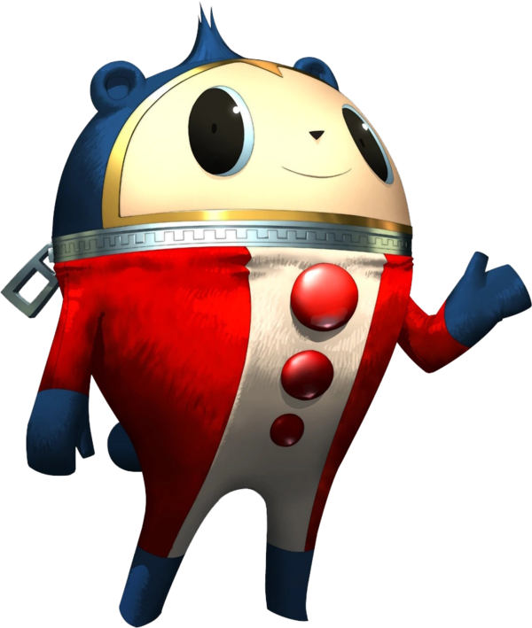
Brilliant young detective.
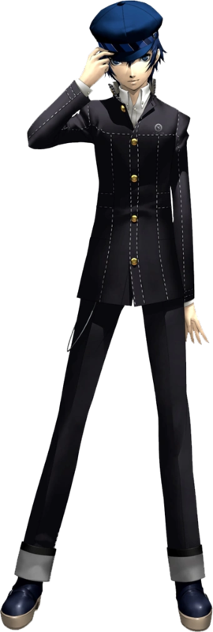
Detective
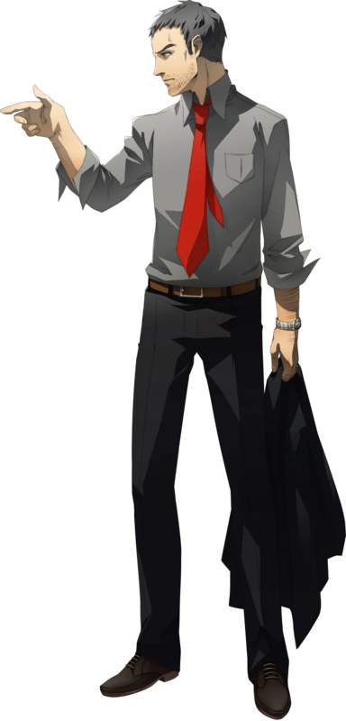
Little Sister
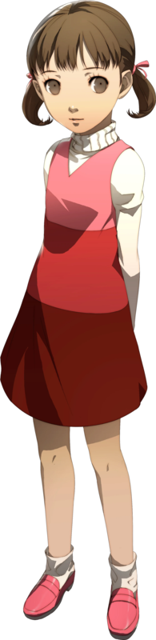
Poet
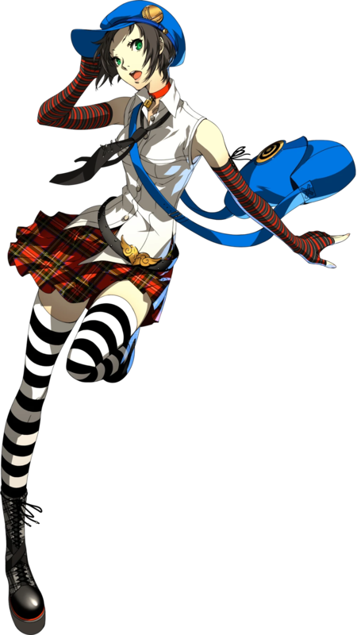
Partner?

Desperate

Empty
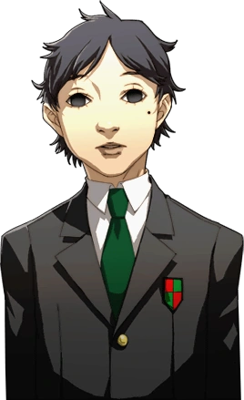
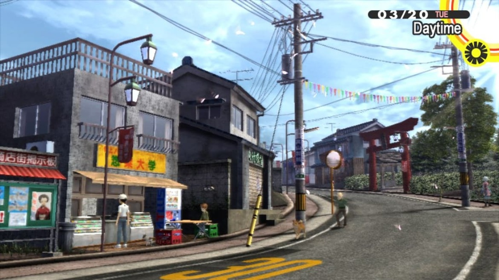
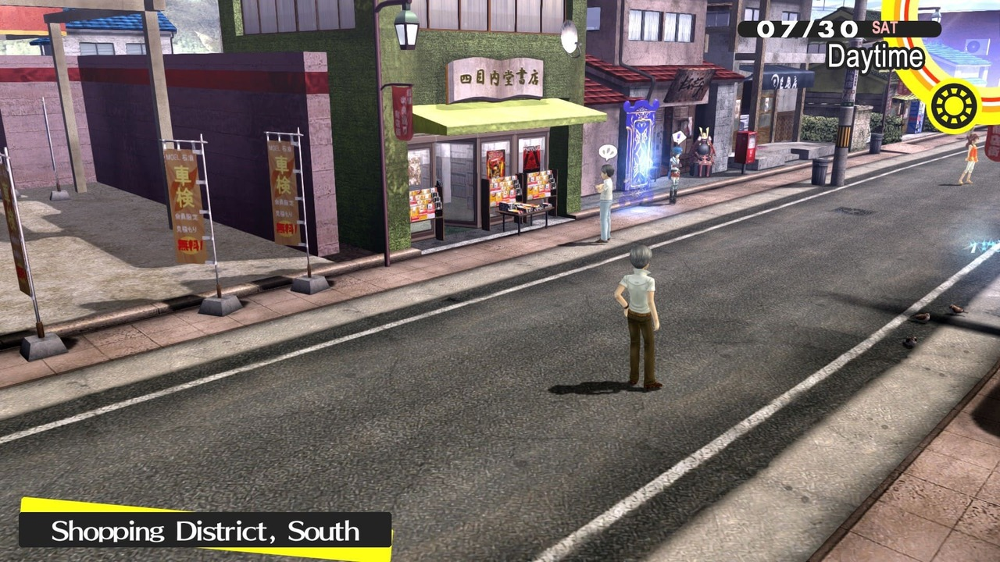
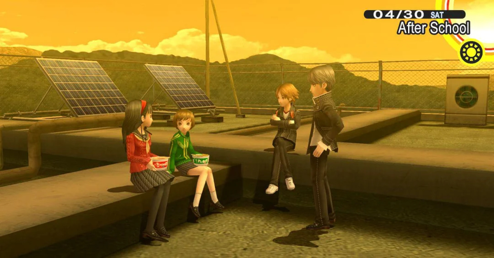
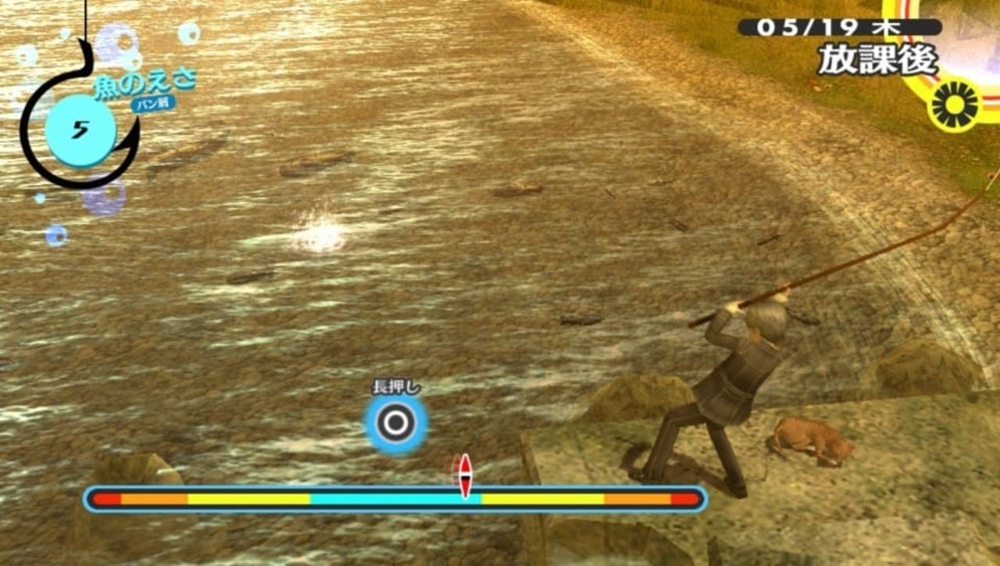
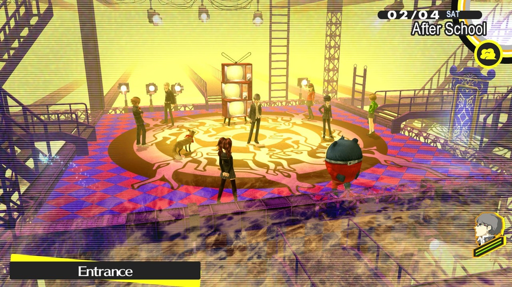

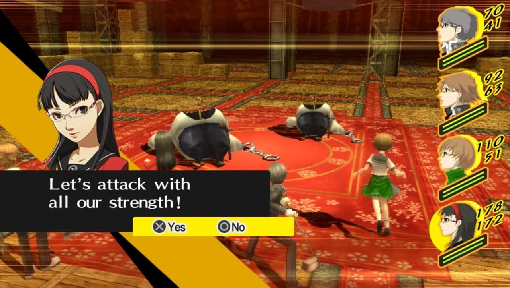
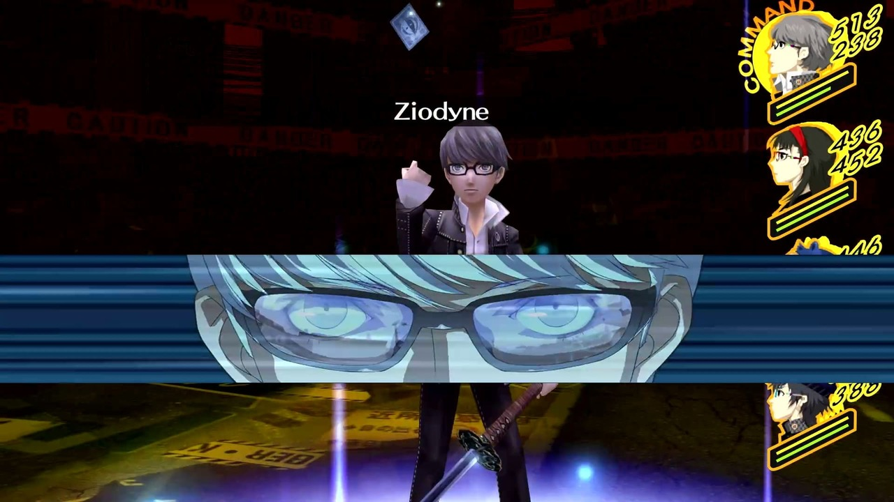
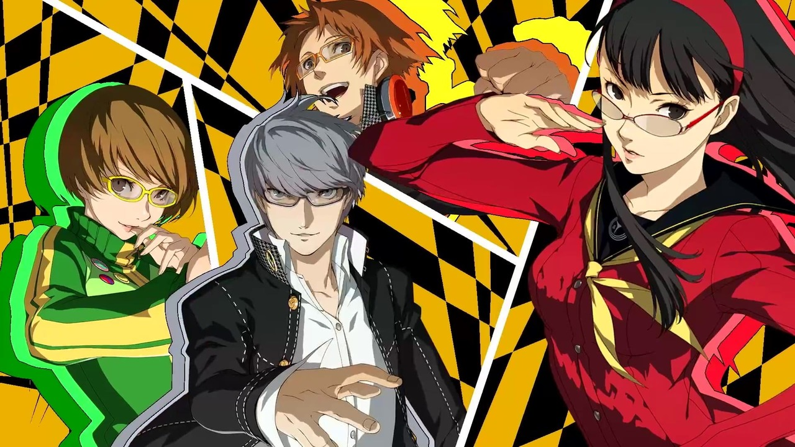